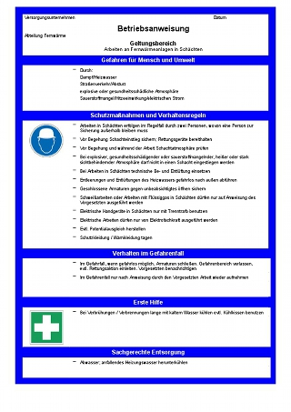
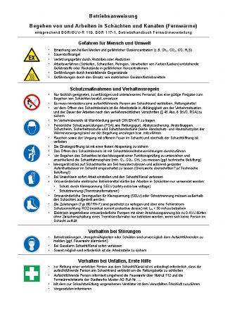
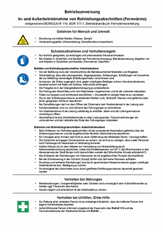

Anhang 3
Musterbeispiele für Betriebsanweisungen aus der Praxis
1 Arbeiten an Fernwärmeleitungen in Schächten

Als Word-Datei öffnen
2. Begehen von und Arbeiten in Schächten und Kanälen (Fernwärme)

Als Word-Datei öffnen
3. In- und Außerbetriebnahme von Rohrleitungsabschnitten (Fernwärme)

Als Word-Datei öffnen